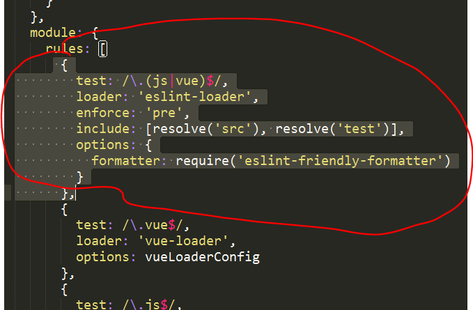

解决vue项目中的因为书写规范而报的错
用vue-cli脚手架起一个项目的时候，默认安装了eslint-loader模块，eslint-loader模块是目前相对比较流行的代码检测工具，可以检测书写的代码是否符合统一规范，可以在一些比较大型的项目开发中统一开发人员的代码风格，这也就是为什么代码缩进有可能导致页面报错的原因（代码缩进不符合规范）。
在下次用vue-cli脚手架起一个项目的时候,可以不安装eslint-loader
解决办法
- 了解
eslint-loader规则，严格按照规范书写代码 关闭
eslint- 如果是在普通的webpack项目中我们只需要打开
webpack.config.js文件，然后去除ESlint在文件中的配置代码就可以了； - 如果是在vue项目中，我们需要打开项目根目录下的build文件夹并且打开该文件夹下的
webpack.base.conf.js文件，然后去除ESlint在文件中的配置代码就可以了。
- 如果是在普通的webpack项目中我们只需要打开
 直接将选中的地方删除就可以了。